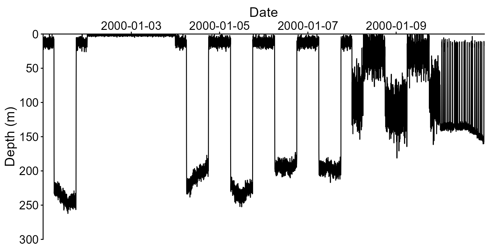
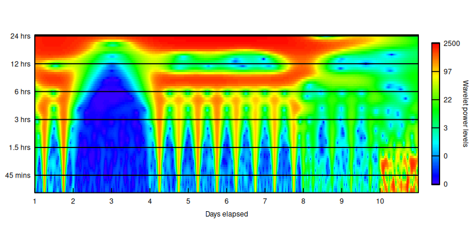
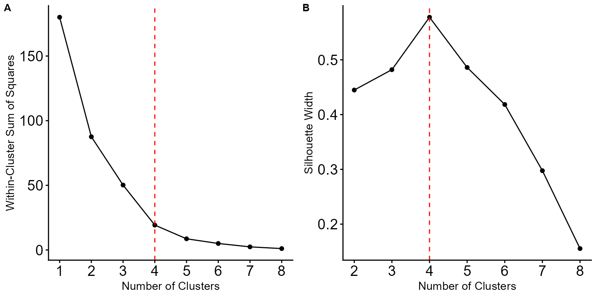
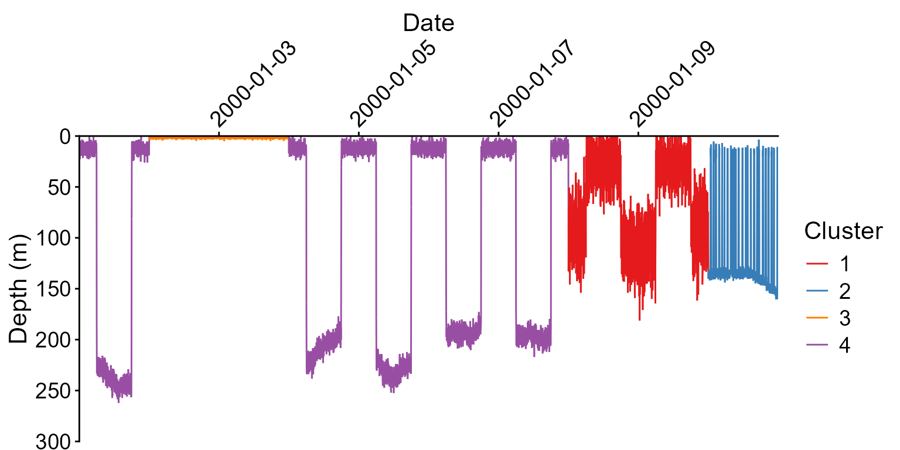
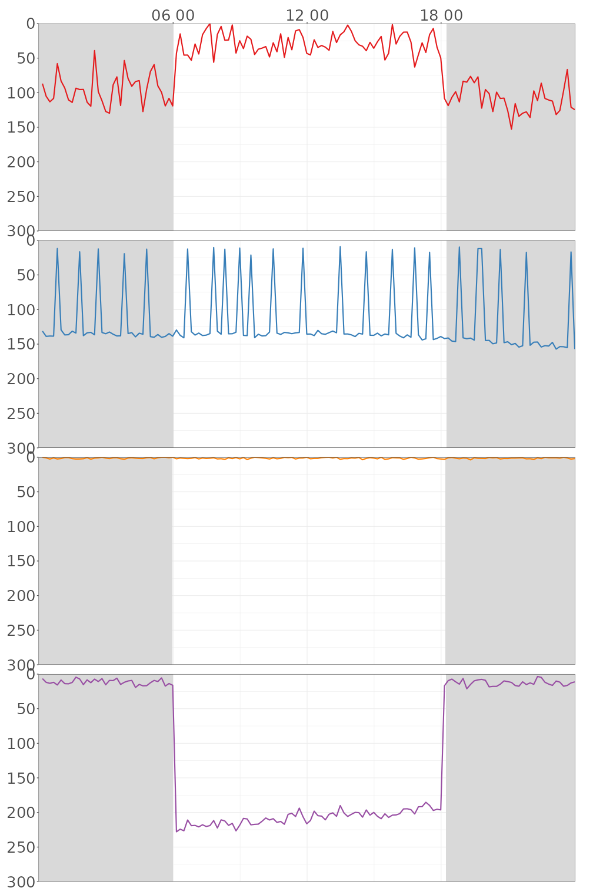

FishDiveR classifies the vertical movement behaviour of tagged aquatic animals from their depth records. Each day of a record is summarised, and days with similar diving patterns are grouped into behaviour clusters. This vignette walks through the whole workflow on the example tag that comes with the package, explaining what each step does and how to choose its settings.
If you’d rather not write code, the same workflow is available as a
point-and-click app: see
vignette("app", package = "FishDiveR"). For long or
high-frequency records, also read
vignette("large-records", package = "FishDiveR").
How the method works
The unit of analysis is the day: each 24-hour period, midnight to midnight in local time, becomes one row of data to cluster.
- Wavelet analysis. A continuous wavelet transform finds how strongly the depth record oscillates at each period (for example every 20 minutes, every 3 hours, once a day) at every point in time. Unlike a Fourier transform, it copes with behaviour that changes through the record.
- Daily statistics. The wavelet results are summarised for each day and each period (mean power, power variance, mean amplitude and so on). Separately, daily depth statistics are calculated from the depth record itself: mean and maximum depth, vertical speed, time near the surface and, optionally, differences between day and night.
- Principal component analysis (PCA). Neighbouring wavelet periods carry very similar information, so the many wavelet statistics are condensed into a few principal components.
- K-means clustering. The principal components and depth statistics are combined, and the days are grouped into k clusters of similar behaviour.
The method is described in detail in Beale et al. (2026), Movement Ecology 14:8, https://doi.org/10.1186/s40462-025-00622-w.
Setting up
Every step saves its results in a project folder, with one sub-folder
per tag (and a Combined_tags folder when several tags are
analysed together). Later steps read the earlier results from there.
Here we use a temporary folder; for your own data, use a permanent
folder.
# Use rgl's off-screen device, as k_clustering() can draw a 3D plot
options(rgl.useNULL = TRUE)
library(FishDiveR)
#> FishDiveR version 1.2.0. Facilitating classification of aquatic animal behaviours from vertical movement data.
#> Type 'citation("FishDiveR")' for citing this R package in publications.
# Example data shipped with the package
example_folder <- system.file("extdata", package = "FishDiveR")
# Project folder for this vignette's results
project <- file.path(tempdir(), "FishDiveR-vignette")
dir.create(project, showWarnings = FALSE)1. Import the depth record
import_tag_data() reads a csv archive with a date-time
column and a depth column, crops it to the deployment, and then to whole
days (midnight to midnight) in the local time zone. The cropped record
is saved as archive_days.rds in the tag’s folder.
archive_days <- import_tag_data(
tag_ID = "data",
tag_deploy_UTC = "2000-01-01 00:00:00",
tag_release_UTC = "2000-01-11 23:59:00",
archive = file.path(example_folder, "data", "data-Archive.csv"),
date_time_col = 1,
depth_col = 2,
time_zone = "UTC",
output = TRUE,
output_folder = project
)
head(archive_days)
#> date depth date_only
#> <POSc> <num> <Date>
#> 1: 2000-01-01 00:00:00 13.9 2000-01-01
#> 2: 2000-01-01 00:01:00 10.8 2000-01-01
#> 3: 2000-01-01 00:02:00 16.5 2000-01-01
#> 4: 2000-01-01 00:03:00 14.8 2000-01-01
#> 5: 2000-01-01 00:04:00 4.7 2000-01-01
#> 6: 2000-01-01 00:05:00 12.1 2000-01-01A few things to check with your own data:
- Time zone. Days are split at local midnight, so give the time zone the animal was in. Time zones with daylight saving are not supported, as the clock changes create days of 23 and 25 hours.
-
Sampling interval. The record needs a constant
sampling interval.
import_tag_data()warns if it finds more than one interval, listing each and how many records have it.sampling_report()then shows where the irregularities are: duplicate times, gaps, changes of sampling rate, and days with fewer records than expected. -
Date-time format. Dates are currently read in the
format
00:01:00 01-Jan-2000.
plot_TDR() plots the depth record. Its
minmax_bins option plots only the shallowest and deepest
record in each of that many time slices: much faster than plotting every
record, while keeping every dive’s extremes.
tdr <- plot_TDR(
rds_file = "data/archive_days.rds",
data_folder = project,
minmax_bins = 2000,
Y_lim = c(0, 300, 50),
date_breaks = "2 day"
)
attr(tdr, "TDR_plot")
2. Wavelet analysis
create_wavelet() runs the continuous wavelet transform
over a range of periods, from lower_period_mins up to
upper_period_hours, with suboctaves periods
for each doubling of period.
- Lower period. The shortest cycle analysed. 5 minutes captures short dives, where the sampling interval allows; it must be at least twice the sampling interval. This example uses 30 minutes to keep the vignette quick.
- Upper period. The longest cycle analysed. 24 hours focuses on daily behaviour.
- Sub-octaves. 12 gives periods that include 24, 12 and 6 hours exactly, with 12 periods between each.
Use the same settings for all tags you will cluster together.
wavelet <- create_wavelet(
archive = archive_days,
tag_ID = "data",
lower_period_mins = 30,
upper_period_hours = 24,
suboctaves = 12,
output = TRUE,
output_folder = project,
plot_wavelet = TRUE,
interactive_mode = FALSE
)With plot_wavelet = TRUE, the power spectrum is saved in
the tag’s 2_Wavelet_Figures folder. Red shows strong
oscillation at that period and time.

Wavelets of long, high-frequency records can need a lot of memory: a
year at 1-second sampling can need tens of gigabytes.
vignette("large-records", package = "FishDiveR") explains
how to estimate this and how to reduce it with
thin_archive().
3. Daily statistics
create_wavelet_stats() summarises the wavelet for each
day and period: mean and variance of the amplitude, phase and power, and
the mean squared power.
wave_stats <- create_wavelet_stats(wavelet, tag_ID = "data", output = TRUE, output_folder = project)
dim(wave_stats)
#> [1] 10 478create_depth_stats() calculates daily statistics from
the full-resolution depth record: mean, standard deviation, minimum and
maximum depth, mean vertical speed, maximum descent and ascent speeds,
skewness and kurtosis of depth, and the proportion of time near the
surface.
With diel = TRUE it adds the differences between night
and day in these statistics, standardised by each day’s maximum depth.
Sunrise and sunset come from a GPS file with daily positions (columns
date, lat and lon), or from fixed
sunrise_time and sunset_time.
depth_stats <- create_depth_stats(
archive = archive_days,
tag_ID = "data",
diel = TRUE,
GPS = file.path(example_folder, "data", "GPS.csv"),
sunset_type = "civil",
output = TRUE,
output_folder = project
)
names(depth_stats)
#> [1] "date_only" "depth.mean" "depth.sd"
#> [4] "depth.min" "depth.max" "mean.abs_vv"
#> [7] "max.dsc_vv" "max.asc_vv" "skewness_depth"
#> [10] "kurtosis_depth" "surface_proportion" "st_mean_diff"
#> [13] "st_sd_diff" "st_range_diff" "st_absVV_diff"
#> [16] "st_dscVV_diff" "st_ascVV_diff" "surf_prop_diff"4. Principal component analysis
pca_data() collects the chosen wavelet statistics for
the tags to analyse. Mean power, power variance and mean amplitude are
the defaults: they capture the most variance in the fewest principal
components.
pc_data <- pca_data(
tag_vector = "data",
data_folder = project,
power_mean = TRUE,
power_variance = TRUE,
amplitude_mean = TRUE
)Before choosing how many components to keep, look at the eigenvalues and the cumulative variance they explain. Asking for up to 50 components returns all of their eigenvalues.
all_pcs <- pca_results(pc_data, No_pcs = 50, plot_eigenvalues = FALSE, interactive_mode = FALSE)
round(head(all_pcs$eig, 8), 2)
#> eigenvalue percentage of variance cumulative percentage of variance
#> comp 1 108.02 52.95 52.95
#> comp 2 55.82 27.36 80.31
#> comp 3 24.25 11.89 92.20
#> comp 4 8.77 4.30 96.50
#> comp 5 3.95 1.94 98.43
#> comp 6 1.80 0.88 99.32
#> comp 7 0.87 0.43 99.74
#> comp 8 0.32 0.16 99.90Common choices are the components with eigenvalues of 1 or more, or enough components to explain at least 70% of the variance. Here three components explain over 90%.
pc_results <- pca_results(pc_data, No_pcs = 3, plot_eigenvalues = FALSE, interactive_mode = FALSE)
pc_scores <- pca_scores(pc_results, plot_loadings = FALSE)combine_data() joins each day’s principal component
scores with its depth statistics, ready for clustering.
kmeans_data <- combine_data(tag_vector = "data", data_folder = project, pc_scores = pc_scores)
dim(kmeans_data)
#> [1] 10 225. Choose the number of clusters and cluster the days
select_k() runs k-means for each number of clusters up
to Max.k, and plots the within-cluster sum of squares (A,
the “elbow” plot) and the mean silhouette width (B). Look for a number
near the elbow, where more clusters stop reducing the sum of squares by
much, and where the silhouette width is high. K-means starts from random
cluster centres, so set a seed for reproducible results.

k_clustering() assigns each day to one of k
clusters. With output = TRUE it also saves a 3D plot of the
first three principal components and figures of each cluster’s mean
variable values.
set.seed(123)
kmeans_result <- k_clustering(kmeans_data, k = 4, nstart = 50, output = FALSE)
table(Cluster = kmeans_result$cluster)
#> Cluster
#> 1 2 3 4
#> 2 1 2 5With only ten days, these clusters are just for illustration: real analyses need many more days for meaningful clusters.
6. Plot the results
plot_cluster_TDR() plots a tag’s depth record with each
day coloured by its cluster.
plot_cluster_TDR(
tag_ID = "data",
data_folder = project,
kmeans_result = kmeans_result,
minmax_bins = 2000,
Y_lim = c(0, 300, 50),
date_breaks = "2 day"
)
plot_clusters() plots the most typical days of each
cluster: those closest to the cluster’s centre. With
diel_shade = TRUE, night is shaded grey. It saves one
figure per cluster and combined figures in the tag’s
6_Cluster-plots folder.
plots <- plot_clusters(
tag_vector = "data",
data_folder = project,
kmeans_result = kmeans_result,
No_days = 1,
Y_lim = c(0, 300, 50),
diel_shade = TRUE,
dpi = 72,
output = TRUE,
output_folder = project
)
Analysing several tags together
Clustering several tags together finds behaviours shared between
individuals. Run steps 1 to 3 for each tag with the same project folder
and wavelet settings, then pass all the tag IDs to
pca_data() and combine_data():
tags <- c("tag_A", "tag_B", "tag_C")
pc_data <- pca_data(tag_vector = tags, data_folder = project, output = TRUE, output_folder = project)
# ... pca_results() and pca_scores() as above ...
kmeans_data <- combine_data(tag_vector = tags, data_folder = project, pc_scores = pc_scores)Results for several tags are saved in the project’s
Combined_tags folder, and plot_clusters()
takes the same tag_vector. Tags analysed together should
have the same wavelet settings, and ideally the same sampling interval
(see thin_archive()).
Citation
If you use FishDiveR, please cite:
Beale C, Hounslow J, Beer A, Braccini M, Erdmann M, Harry A, Loneragan
N, Meekan M, Newman S, Righton D, Runtuboy F, Travers M, Wright S,
Gleiss A (2026). "FishDiveR: wavelet analyses and machine learning
provide robust classification of animal behaviour from time-depth
data." _Movement Ecology_, *14*(1), 8. doi:10.1186/s40462-025-00622-w
<https://doi.org/10.1186/s40462-025-00622-w>.